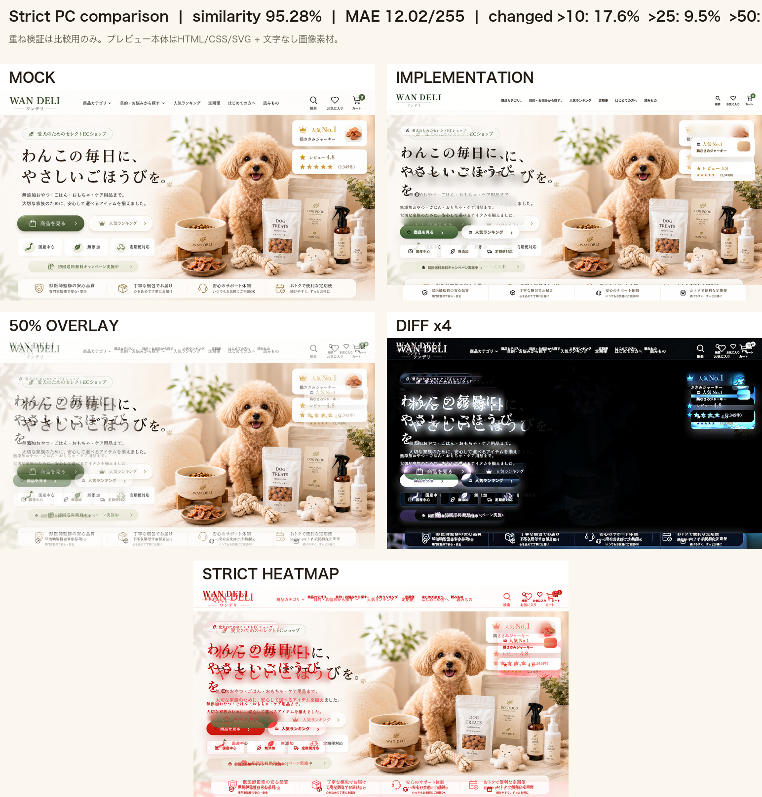

WAN DELI モック × 実装 超厳密比較
再度、実装スクリーンショットをモックと同一サイズで切り出し、平均絶対差分・差分率・50%重ね・差分4倍・ヒートマップで超厳しめに比較しました。プレビュー本体は実コード版です。
重ね表示・差分・ヒートマップはこの比較ページ内の検証画像のみです。プレビュー本体にモック画像を重ねていません。
プレビューへ戻る / 超厳密サマリーJSON / 改善結果Markdown
数値結果
95.28%PCヒーロー類似度
12.02MAE / 255
9.51%差分 > 25
5.85%差分 > 50
超厳密比較: モック / 実コード / 50%重ね / 差分4倍 / ヒートマップ

標準比較: モック / 実コード / 50%重ね / 差分

SP 実URLスクリーンショット

改善結果
PCヒーロー比較: 95.28% MAE: 12.02 / 255 差分率: >10 = 17.56%, >25 = 9.51%, >50 = 5.85% 超厳しく見ると、残差は右側ヒーロー写真の犬・商品群・カード周辺と下部安心バーに集中しています。 ただし、プレビュー本体は実HTML/CSS/SVG + 文字なし画像素材で構成しており、比較用の重ね画像は本ページ内だけです。